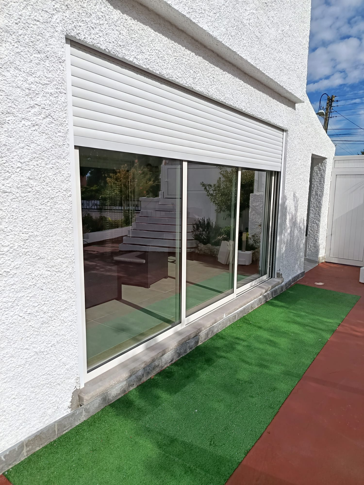

Reparação e substituição de estores.
O estore não sobe, a fita partiu, as lâminas estão tortas? Há mais de 30 anos que monto e reparo estores e janelas — em Sintra e por toda a Grande Lisboa.
Problemas que resolvo
- O estore não sobe nem desce
- A fita partiu ou está gasta
- Lâminas partidas ou tortas
- O estore saiu da calha ou ficou preso
- Eixos, molas e roldanas gastos
- Estores novos por medida, em PVC ou alumínio
O seu problema não está na lista? Ligue na mesma — vejo o que é e digo-lhe já se o posso resolver.
Como funciona
-
1
Contacto
Um telefonema ou mensagem por WhatsApp para falarmos sobre o estore.
-
2
Visita gratuita
Visito o local, vejo o problema e tiro as medidas.
-
3
Orçamento
Envio um orçamento claro — sem rodeios, sem custos.
Quem vai é quem faz
Sou serralheiro de ofício, sediado em Mem Martins. Quem atende o telefone, tira as medidas e faz o trabalho sou eu — sem call centers, sem intermediários.
Trabalho em casas, apartamentos e lojas por toda a Grande Lisboa. Veja os meus trabalhos.
Contacto
Telemóvel969 344 582
WhatsApp969 344 582
Emailjanelascamposlima@gmail.com
Já trabalhámos juntos?
★ Deixe a sua avaliação no GoogleSintra · Cascais · Oeiras · Amadora · Lisboa · Loures · Odivelas